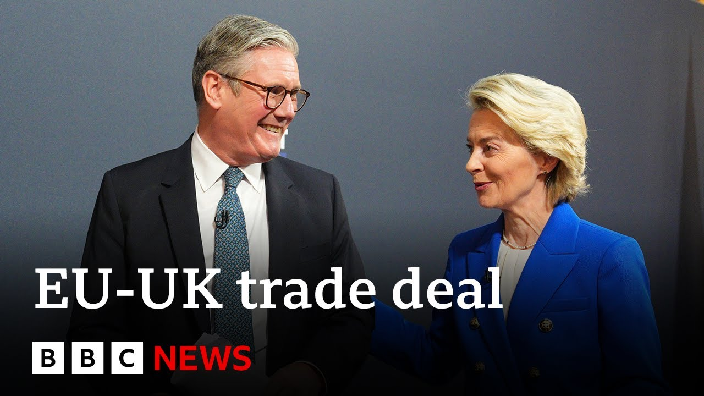

【英国与欧盟就食品、渔业、国防和护照检查达成新贸易协议 | BBC新闻】
Summary: The UK and EU have signed a landmark trade deal covering fishing, agriculture, security, and travel, marking a new chapter in post-Brexit relations, with leaders emphasizing cooperation and mutual benefits.
摘要： 英国与欧盟签署了一项涵盖渔业、农业、安全和旅行的里程碑式贸易协议，标志着脱欧后关系的新篇章，双方领导人强调合作与互利。

⏱️ Estimated Reading Time: 11 min
Here in London, Sakia Stama has said that Britain is back on the world stage as he unveiled a new deal with the EU alongside senior European officials at a summit.
在伦敦，萨基亚·斯塔玛与欧盟高级官员在峰会上共同宣布新协议时表示，英国已重返世界舞台。
The agreement aimed at resetting relations with EU after Brexit was hailed by the head of the European Council as a new chapter.
该协议旨在重置脱欧后与欧盟的关系，被欧洲理事会主席誉为新篇章。
Antonio Kosha also describing the UK and the EU as neighbors, allies, partners, and friends.
安东尼奥·科沙还将英国与欧盟描述为邻居、盟友、伙伴和朋友。
While European Commission President Olland de Lion said today's agreement sent out a message to the world that in Europe we stick together.
而欧盟委员会主席奥兰德·德莱昂表示，今天的协议向世界传递了欧洲团结一致的信息。
Let's take a look at what this agreement includes.
让我们看看这项协议包含哪些内容。
There's a 12-year deal around fishing access for EU boats in UK waters.
其中包括欧盟船只进入英国水域捕鱼的12年协议。
Confirmation there will be no increase in the amount of fish that EU vessels can catch.
确认欧盟船只的捕鱼量不会增加。
Some routine checks on animal and plant food products will be removed completely.
对动植物食品的一些例行检查将被完全取消。
that will allow goods to flow freely again, including between Great Britain and Northern Ireland.
这将使货物再次自由流动，包括大不列颠和北爱尔兰之间。
British tourists will be able to use more passport e-gates in Europe as well and also agreement to cooperate further on a youth experience scheme that could see young people able to work and travel freely in Europe once again.
英国游客还可在欧洲使用更多护照电子通道，并同意进一步合作青年体验计划，让年轻人能再次在欧洲自由工作和旅行。
There'll also be a new security and defense partnership.
还将建立新的安全与防务伙伴关系。
Well, watching it all for us unfold today from central London where the summit has been held is my colleague Regini Vajinavan.
在伦敦市中心峰会现场为我们全程报道的是我的同事雷吉尼·瓦吉纳万。
Regini, yeah, the proceedings now have wrapped up, Lucy, here at Lancaster House in central London.
雷吉尼，是的，露西，现在活动已在伦敦市中心兰卡斯特宫结束。
But make no mistake, whether you are pro or anti- Brexit, today has been a symbolic and an historic one.
但毫无疑问，无论你是支持还是反对脱欧，今天都具有象征性和历史性意义。
Uh, a number of deals, as you outlined there, that have been signed between the EU and the UK.
正如你所概述的，欧盟与英国签署了多项协议。
And Sakir Stalmer in a news conference taking questions afterwards, he was asked, "Is this backsliding away from Brexit?"
萨基尔·斯塔默在随后的新闻发布会上被问到：“这是否背离了脱欧？”
That kind of thing.
类似的问题。
Well, he said, "No, this is all about moving forward."
他表示：“不，这完全是关于向前迈进。”
He used language that really was in some ways repetitive, but sending a similar message out.
他的措辞在某种程度上是重复的，但传递了相似的信息。
He's saying, "We're moving forwards, not backwards."
他说：“我们在前进，而不是后退。”
He said, "This is a new era. This is turning a page."
他表示：“这是一个新时代，这是翻开新的一页。”
And most of all, he said that Britain was back on the world stage, highlighting the fact, of course, that it's only been uh a few weeks since the UK signed an agreement on trade with the US and of course before that with India.
最重要的是，他表示英国已重返世界舞台，并强调英国仅在几周前与美国签署了贸易协议，当然此前还与印度签署了协议。
Despite uh some criticism from opposition parties, Sakir Star said this was a good agreement today for all sides.
尽管遭到反对党的一些批评，萨基尔·斯塔尔表示今天的协议对各方都有利。
Today we have struck this landmark deal with the EU, a new partial between an independent Britain and our allies in Europe.
今天我们与欧盟达成了这一里程碑式的协议，这是独立英国与欧洲盟友之间的新伙伴关系。
This is the first UK EU summit.
这是英国与欧盟的首次峰会。
It marks a new era in our relationship and this deal is a win-win.
它标志着我们关系的新时代，这项协议是双赢的。
It delivers what the British public voted for last year.
它兑现了英国公众去年的投票结果。
It gives us unprecedented access to the EU market, the best of any country outside of the EU or EFA.
它为我们提供了前所未有的欧盟市场准入，是非欧盟或欧洲自由贸易联盟国家中最好的。
Well, as the prime minister and the UK government have been saying, even before all of these deals were agreed and announced, to them, this marks a reset moment for relations between the EU and the UK.
正如首相和英国政府此前所言，甚至在所有这些协议达成和宣布之前，这对他们而言标志着欧盟与英国关系的重置时刻。
And make no mistake, this does bring the EU and the UK closer together with these cooperation agreements, though it doesn't tear up much of the principles and agreements of Brexit.
毫无疑问，这些合作协议确实拉近了欧盟与英国的距离，尽管它并未推翻脱欧的大部分原则和协议。
Well, Ursula Vonign, president of the EU Commission said this was a new beginning for old friends.
欧盟委员会主席乌尔苏拉·冯德莱恩表示，这是老朋友的新开始。
Let's have a listen to what she had to say at that news conference.
让我们听听她在新闻发布会上的发言。
What we have read today is historic.
我们今天所达成的是历史性的。
It will make a real difference to people in the UK and across our union.
它将为英国和整个欧盟的人民带来真正的改变。
But the message we are sending to the world today is equally, if not more important.
但我们今天向世界传递的信息同样重要，甚至更为重要。
It is a message that at a time of global instability and when our continent faces the greatest threat it has for generations, we in Europe stick together.
这一信息表明，在全球动荡和我们大陆面临几代人以来最大威胁的时刻，我们欧洲人团结一致。
Ursula von the line there.
乌尔苏拉·冯德莱恩的发言到此结束。
Well, we are getting some reaction from across the political spectrum.
我们正收到来自各政治派别的反应。
We've had some reaction from leader of the Conservative party bed.
我们收到了保守党领袖贝德的一些反应。
Shortly after those announcements, uh, Miss Bedno said she was gobsmacked, uh, by the series of deals that the prime minister signed.
在宣布后不久，贝德诺女士表示她对首相签署的一系列协议感到震惊。
She said the deal on fishing, that we'll go into a bit more detail with, uh, my colleague Emry Zman in a moment, was a sellout.
她表示渔业协议（稍后我的同事埃姆里·兹曼将详细介绍）是一种背叛。
And she said that that has taken the UK back to square one.
她表示这使英国回到了起点。
We should be using opportunities of leaving the European Union and not taking steps back.
我们应该利用离开欧盟的机会，而不是倒退。
Now, she did welcome some news, though.
不过，她确实欢迎一些消息。
She welcomed the news on Egates uh when it comes to passports.
她欢迎关于护照电子通道的消息。
Uh so that now will give uh Brit Britain's access to a separate lane now uh rather than the non-EU lane when they go overseas to Europe.
因此，现在英国人在前往欧洲时将可以使用单独的通道，而非非欧盟通道。
And also there was some movement on pet passports.
此外，在宠物护照方面也有所进展。
But she said she had concerns about what the UK had given away in concessions.
但她表示对英国在让步方面的做法感到担忧。
Well, let's discuss a bit more about what we heard today and what was agreed today in the building behind us with our chief political correspondent Henry Zeman.
让我们与首席政治记者亨利·泽曼进一步讨论今天听到的内容以及在我们身后大楼中达成的协议。
Um, of course this is a big moment whichever way you look at it.
当然，无论从哪个角度看，这都是一个重要时刻。
But if we look back to Brexit 2016 and then of course 2020 when agreements were finally made for a UK postrexit, it was a lot of politics, a lot of emotion.
但如果我们回顾2016年的脱欧以及2020年最终达成的脱欧后协议，其中充满了政治和情感因素。
How much of that existing deal has in reality been ripped up?
实际上，现有协议有多少被推翻了？
Well, the fundamentals of the UK's postrexit relationship with the EU are unchanged.
英国与欧盟脱欧后关系的基本框架并未改变。
Some of the earliest debates postrexit and ultimately actually they were settled by Theresa May, not Boris Johnson were, would the UK remain part of the single market, yes or no?
脱欧后最早的一些辩论（实际上是由特蕾莎·梅而非鲍里斯·约翰逊解决的）是：英国是否留在单一市场？
And the answer was no.
答案是否定的。
Would the UK remain part of the customs union, yes or no?
英国是否留在关税同盟？
And the answer to that was no as well.
答案同样是否定的。
Karma is not altering those fundamentals.
卡玛并未改变这些基本原则。
But what he is doing within those parameters is trying to move much closer to the European Union.
但他正在这些框架内努力与欧盟走得更近。
That is openly what he is trying to achieve here.
这是他公开试图实现的目标。
The big ticket items today which amount to that growing closeness are about the UK following the same agricultural rules as the EU.
今天体现这种日益紧密关系的重要事项是英国遵循与欧盟相同的农业规则。
That's designed to make it easier to import agricultural goods from the UK to the EU.
这是为了使从英国向欧盟进口农产品更加便利。
and also that extension of fishing quotas, fishing rights for European vessels in UK waters for 12 years.
以及将欧洲船只在英国水域的捕鱼配额和捕鱼权延长12年。
That might prove quite controversial.
这可能会引起很大争议。
Those are two fairly technical elements, but ultimately, as we learned during the Brexit negotiation years, the post-rexit relationship between the UK and the EU amounts to an accumulation of small technical details which overall add up to a really important sense of what the relationship is.
这是两个相当技术性的要素，但正如我们在脱欧谈判期间所了解到的，英国与欧盟的脱欧后关系是由许多小的技术细节累积而成的，这些细节总体上构成了对双方关系的真正重要认知。
Okay, Henry Zeffan, thank you very much for your assessment of the events here today.
好的，亨利·泽凡，非常感谢你对今天事件的评估。
Well, there's plenty more analysis on the BBC News website if you want to go through in detail all of the different agreements on defense, security, fishing, and food and more.
如果你想详细了解国防、安全、渔业和食品等方面的所有不同协议，BBC新闻网站上有更多分析。
You can find all of that on the BBC News website and uh of course analysis from colleagues such as um uh Penry Zman.
你可以在BBC新闻网站上找到所有这些内容，当然还有佩里·兹曼等同事的分析。
That's it for the moment.
目前就这些。
Regini, see you shortly.
雷吉尼，稍后见。